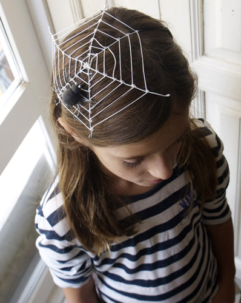

Erste Vorbereitungen zu Halloween. Ein Spinnennetz inklusive Spinne als gruseligen Kopfschmuck.
Die Diagonalen dieses Spinnennetzes sind aus weißem Kabel. Der Knoten des Drahtes und des Garns wird mit Heißkleber (Pistole) fixiert. Um das Spinnennetz im Haar zu halten, wie ein Haarreif, haben wir eine Gummiband an zwei Drahtenden befestigt.